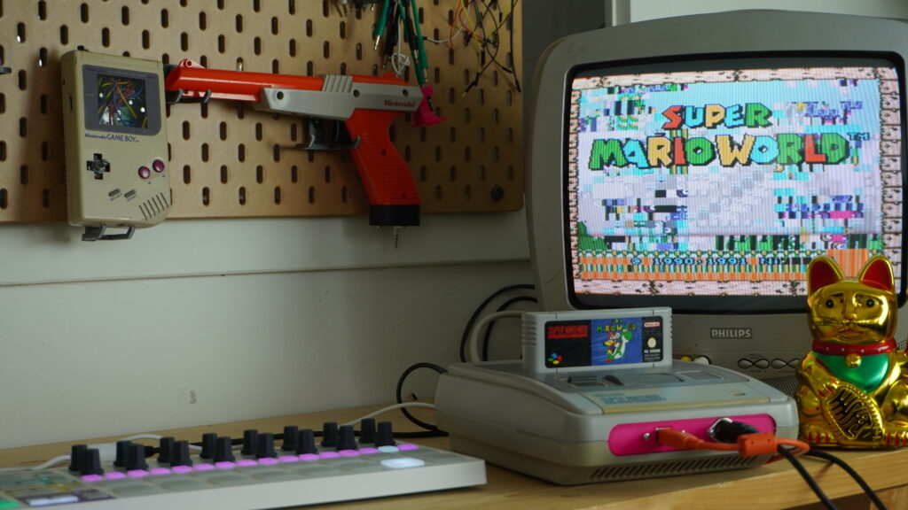

Van Kapotte Super Nintendo naar Audiovisuele Kunst
Een unieke reis van een kapotte Super Nintendo, omgevormd tot een muziekgestuurde videosynthesizer. Ontdek hoe oude gametechnologie nieuw leven krijgt met creatieve technologie en live muziek.

Een nieuw leven voor een oude SNES
Al jaren lag er een kapotte SNES in mijn kast. Hij functioneert nog, maar kan bepaalde visuele sprites, zoals Mario in Super Mario World, niet weergeven. Dit bracht me op een idee: waarom zou ik deze al kapotte console niet omtoveren tot een muziekgestuurde videosynthesizer?
De magie van circuitbending
Ik opende de Super Nintendo en ging op zoek naar pinnen op het moederbord die vette visuele effecten creëerden wanneer ze kortgesloten werden. Het was een soort schatzoeken binnen de elektronica van de SNES, een techniek die ook wel bekendstaat als circuitbending.
Na het ontdekken van de vetste combinatie van pinnen, vooral die rondom de grafische chip, koppelde ik ze aan een transistorschakelbord dat ik voor een eerder project had ontworpen. Via een Arduino kon ik de verbindingen aansturen en dus de pinnen die samen een visuele glitch veroorzaken op commando met elkaar laten kortsluiten.
De wereld van MIDI
Het volgende deel was het programmeren van code waarmee de transistors via MIDI konden worden aangestuurd. In mijn go-to muziekprogramma Ableton stuur ik de visuele glitches via MIDI. Het is alsof ik kleine filmpjes aanstuur, vergelijkbaar met VJ-software, maar deze filmpjes worden in werkelijkheid gecreëerd door gestuurde glitches in een Super Nintendo.
Retro gaming en moderne muziek versmelten
Tijdens liveoptredens sluit ik de Super Nintendo Videosynthesizer aan op een projector. De live visuals veranderen generatief en lopen automatisch synchroon met mijn muziek. Wat het bijzonder maakt, is dat elke gamecartridge unieke visuals oplevert. Ik kan cartridges verwisselen om diverse visuals te creëren, zonder de MIDI-sequenties aan te passen.
Oude techniek in een nieuw jasje
Achteraf voelt dit als een van mijn eerste stappen richting het maken van interactieve installaties. Muziek, games en mensen samenbrengen, daar word ik, en Studio Wotto, superblij van.
Deze experimentele mix van oude gametechnologie en moderne visuals toont precies waar mijn hart ligt. Door verder te kijken dan conventionele toepassingen ontstaan nieuwe kunstvormen en expressiemogelijkheden. Blijf experimenteren, blijf creëren.